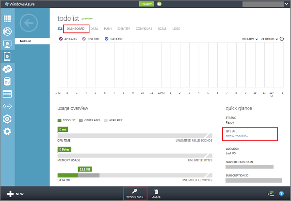

Visual Basic Version of the Azure Mobile Services-Generated Quickstart
Introduction
Azure Mobile Services is a Microsoft Azure service offering designed to make it easy to create highly-functional mobile apps using Azure. Mobile Services brings together a set of Azure services that enable backend capabilities for mobile apps. Mobile Services provides a rich programming model, including client libraries for devices, a JavaScript library for server-side business logic, authentication, scheduled execution, and REST APIs.

Why This Sample?
This Windows Store app sample in Visual Studio 2012 is an equivalent Visual Basic project for the project that is currently generated by the Windows Azure Mobile Services quickstart in the Azure Management Portal. You can see how this works (for C# and JavaScript projects) by completing the Get started with Mobile Services tutorial.
Note: To complete the tutorial, you need an Azure account. For details, see Create a Windows Azure account and enable preview features.
Prerequisites
Before you can build and run this Windows Store app sample that stores data in Mobile Services, you need to have the following:
- Visual Studio 2012 Express for Windows Store apps (or an equivalent verison of Visual Studio that supports Windows Store app development).
- An active Azure subscription.
Before you get started, you must also have created a mobile service. You can do this by following the first part of one of these tutorials:
Configure the Project
Before you can run the project, you must configure the app to communicate with your mobile service. To do this, you need to get information for the mobile service from the Management Portal and use this to update the project.
- In the Management Portal, click Mobile Services, and then click the mobile service you just created.
-
Click the Dashboard tab and make a note of the Site URL, then click Manage keys and make a note of the
Application key.

You will need these values when accessing the mobile service from your app code.
-
In Visual Studio, open the file App.xaml.vb, uncomment the code that defines the MobileService variable, and supply the URL and application key from the mobile service in the MobileServiceClient constructor, in that order.
This creates a new instance of MobileServiceClient that is used to access your mobile service.
Run the App
- In Visual Studio, press the F5 key to run the app.
- As before, type text in Insert a TodoItem, and then click
Save.
This sends a new item as an insert to the mobile service. - In the Management Portal, click Mobile Services, and then click your mobile service.
- Click the Data tab, then click Browse.
Notice that the TodoItem table now contains data, with id values generated by Mobile Services, and that columns have been automatically added to the table to match the TodoItem class in the app. - In the app, check one of the items in the list, then click the Refresh button.
Notice that the checked item now disappears from the list. Each refresh results in a round-trip to the mobile service, which now returns filtered data. - Go back to the Browse tab in the portal and click Refresh.
Notice that the complete value has changed from false to true.